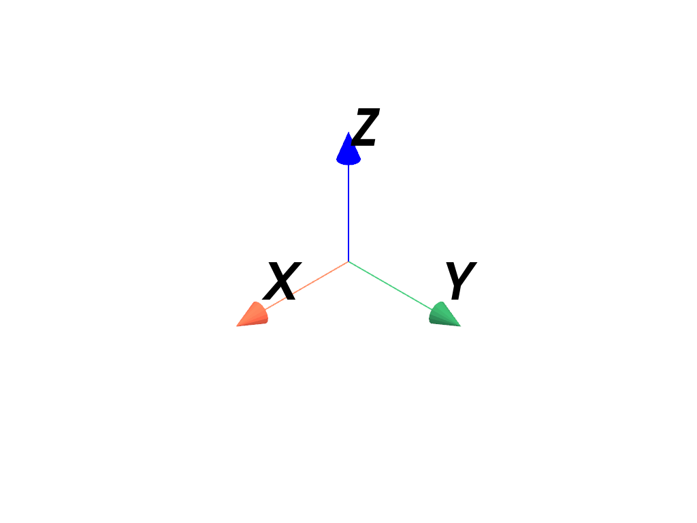

pyvista.create_axes_marker#
- create_axes_marker(label_color=None, x_color=None, y_color=None, z_color=None, xlabel='X', ylabel='Y', zlabel='Z', labels_off=False, line_width=2, cone_radius=0.4, shaft_length=0.8, tip_length=0.2, ambient=0.5, label_size=(0.25, 0.1))[ソース]#
Create an axis actor.
- Parameters
- label_color
ColorLike,optional Color of the label text.
- x_color
ColorLike,optional Color of the x axis text.
- y_color
ColorLike,optional Color of the y axis text.
- z_color
ColorLike,optional Color of the z axis text.
- xlabel
str, default: "X" Text used for the x axis.
- ylabel
str, default: "Y" Text used for the y axis.
- zlabel
str, default: "Z" Text used for the z axis.
- labels_offbool, default:
False Enable or disable the text labels for the axes.
- line_width
float, default: 2 The width of the marker lines.
- cone_radius
float, default: 0.4 The radius of the axes arrow tips.
- shaft_length
float, default: 0.8 The length of the axes arrow shafts.
- tip_length
float, default: 0.2 Length of the tip.
- ambient
float, default: 0.5 The ambient of the axes arrows. Value should be between 0 and 1.
- label_sizesequence[
float], default: (0.25, 0.1) The width and height of the axes label actors. Values should be between 0 and 1. For example
(0.2, 0.1).
- label_color
- Returns
vtk.vtkAxesActorAxes actor.
Examples
Create the default axes marker.
>>> import pyvista as pv >>> marker = pv.create_axes_marker() >>> pl = pv.Plotter() >>> _ = pl.add_actor(marker) >>> pl.show()
 Create an axes marker at the origin with custom colors and axis labels.
>>> import pyvista as pv >>> marker = pv.create_axes_marker( ... line_width=4, ... ambient=0.0, ... x_color="#378df0", ... y_color="#ab2e5d", ... z_color="#f7fb9a", ... xlabel="X Axis", ... ylabel="Y Axis", ... zlabel="Z Axis", ... label_size=(0.1, 0.1), ... ) >>> pl = pv.Plotter() >>> _ = pl.add_actor(marker) >>> pl.show()